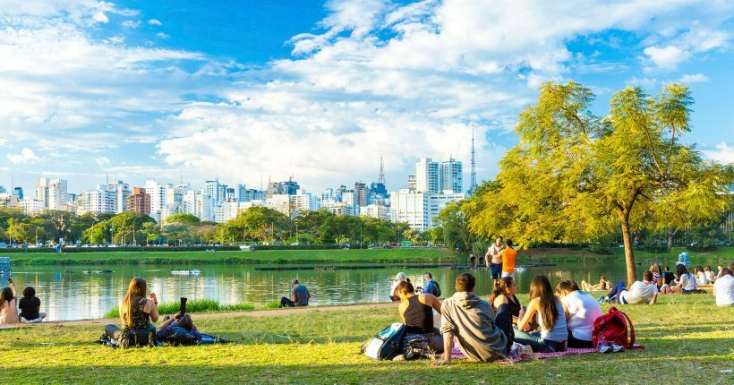

Pontos Turísticos

O Estádio Morumbi está sempre no roteiro de viagem dos apaixonados por futebol. Sede oficial time São Paulo Futebol Clube, o lugar está entre os mais turísticos em SP.
Você pode percorrer o estádio em dias que não há jogo em uma visita guiada. São cerca de 90 minutos para conhecer toda a estrutura do estádio, tirar fotos e conhecer a história do clube paulista.
Mesmo quem não é fã de futebol ou do SPFC vai gostar do passeio, afinal, estamos falando do terceiro maior estádio do Brasil!! – ficando atrás apenas do Maracanã e do Mineirão.
A principal avenida da cidade está entre os lugares turísticos em SP obrigatórios no roteiro de qualquer viagem!
Com quase 3 km de extensão, você pode visitar a avenida muitas vezes, durante muitas viagens, e vai se surpreender com quantos passeios vai encontrar sem repetir programas.
Além de ser um dos pontos turísticos de São Paulo mais importantes, a principal avenida da cidade contempla tudo que há de melhor em sampa! E oferece uma grande quantidade de atrações em cada quarteirão.
Quem não lembra logo da 25 de março quando falamos de São Paulo? A rua mais famosa da cidade é tradicional quando o assunto é fazer compra barata.
Sempre cheia e com um ritmo bem acelerado, a rua é um dos melhores locais para entender melhor o ritmo de SP!
Para quem não perde a oportunidade de comprar lembracinhas durante suas viagens, a rua 25 de março é ideal para quem está buscando por artigos decorativos, bijuterias, roupas, calçados, utensílios domésticos, e muito mais.

Até quem nunca foi à Sampa já ouviu falar… O Parque Ibirapuera, um dos principais lugares turísticos em SP, é o verdadeiro point da cidade.
Até quem nunca foi à Sampa já ouviu falar… O Parque Ibirapuera, um dos principais lugares turísticos em SP, é o verdadeiro point da cidade.
Até quem nunca foi à Sampa já ouviu falar… O Parque Ibirapuera, um dos principais lugares turísticos em SP, é o verdadeiro point da cidade.

Liberdade, um dos lugares turísticos em SP, é um pedacinho do Japão na metrópole.
Tudo começou com a imigração dos japoneses e suas atividades comerciais, e hoje o local é um dos mais visitados!
Acontecem muitas festas temáticas durante o ano, mas não se preocupe caso sua viagem não coincida com uma data importante, a Feira da Liberdade abre todos os domingos e ganha as ruas do bairro com muita comida típica.
Entre os lugares turísticos em SP para quem quer ter uma experiência gastronômica, o Mercadão, como é conhecido o Mercado Municipal paulista, é o lugar ideal!
Por lá, você vai encontrar o maior polo culinário da cidade de São Paulo. São quase 300 boxes que têm em seu cardápio as mais variadas iguarias locais. Fica até difícil escolher em qual parar, né?!
Em seu passeio, não deixe de experimentar o famoso pão com mortadela e o pastel de bacalhau, algumas das comidas paulistanas mais típicas.
O Zoo de São Paulo é um dos pontos turísticos mais legais para quem está viajando com crianças para São Paulo. Já adiantamos que o lugar é grande! São mais de 4 km de ruas para explorar e ver as mais de três mil espécies de animais.
Lá você encontra também o Mundo dos Dinossauros, um espaço com mais de 20 réplicas dos dinossauros extintos que fazem a alegria das crianças ao vê-los grande em meio à natureza.
O Aquário de São Paulo é um dos melhores pontos turísticos em SP para visitar com filhos e crianças. Ideal para viagens em família!
Com mais de um milhão de litros de água, o aquário fica atrás apenas do AquaRio, o maior aquário da América Latina.
O local foi inaugurado em 2006 e tenta reproduzir o habitat natural dos animais. Além do oceanário, abriga também animais terrestres, organizados em setores temáticos.
O MASP, Museu de Arte de São Paulo, é um grande marco para a capital paulista e também para o Brasil. Isso porque ele é o primeiro museu de arte moderna do país!
Localizado na Avenida Paulista, o prédio chama a atenção por ser um dos mais bem visto arquitetonicamente. O sucesso fica por conta do vão livre que é palco de muitas feiras, eventos, encontros, etc.
Mas, claro, para os apreciadores da arte, o destaque fica mesmo nas exposições e obras dispostas pelos andares do museu.
LEO'S GEOGRAPY
Conhecimento é a chave do sucesso